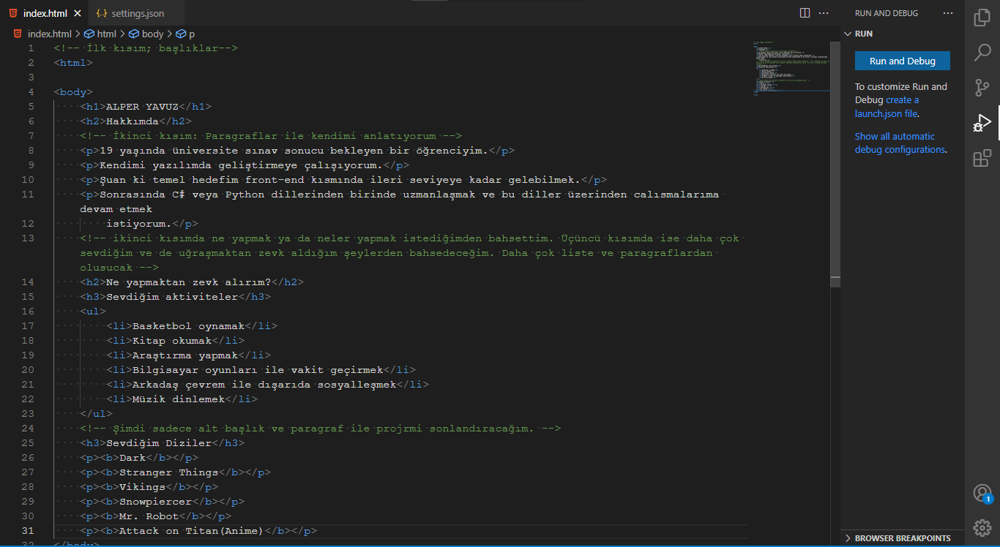
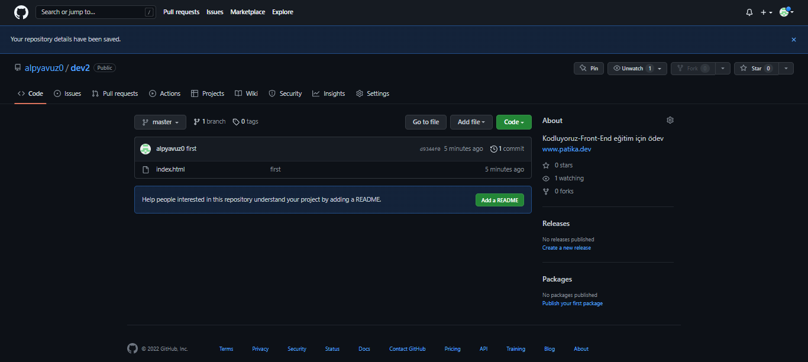

<!-- img src etiketi ile görsel ekleme -->
<!-- Yükleme yapmak istediğimiz resmin proje klasöründe olması ya da internet üzerinden adres tayin edilmesi gerekmektedir. -->
<!-- Proje klasörünün içindeki resimler genel olarak daha işlevsel daha hızlı bir şekilde eklenebiliyor. -->

<!-- Yukarıdaki kullanımda local üzerinden proje klasörüne yerleştirdiğim resimi kullandım -->

<!-- Burada ise app.patika.dev adresinden aldığım bir resmin bağlantısını kullandım. Resmin sürekliliği kesin değildir. -->

<!-- Bu kısımda ise width ve height etiketlerinin nasıl çalıştığına baktım. -->


